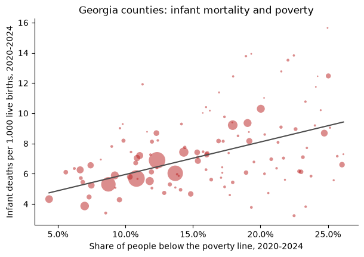

Analyzing Georgia data#
This article puts two datasets side by side: infant mortality from the Georgia Department of Public Health and the poverty rate from the U.S. Census. Infant mortality, the number of babies who die before their first birthday per 1,000 live births, is one of the most widely used measures of a community's health. The article shows the steps any such analysis needs.
import matplotlib.pyplot as plt
import numpy as np
import pandas as pd
from matplotlib.ticker import PercentFormatter
import georgiacivicdata as gcd
Pick the datasets#
gcd.search("infant mortality", n=3)[["name", "title", "year_min", "year_max"]]
| name | title | year_min | year_max | |
|---|---|---|---|---|
| 0 | infant_deaths | Infant Deaths and Infant Mortality Rates | 2000 | 2025 |
| 1 | fetal_deaths | Fetal Deaths and Fetal Mortality Rates | 2000 | 2025 |
| 2 | birth_outcomes | Birth Outcomes (Low Birthweight and Prete... | 2000 | 2025 |
gcd.search("poverty rate", level="counties", n=3)[["name", "title", "year_min", "year_max"]]
| name | title | year_min | year_max | |
|---|---|---|---|---|
| 0 | poverty | Poverty (ACS) | 2020 | 2024 |
| 1 | poverty_by_nativity | Poverty by Nativity and Citizenship (ACS) | 2020 | 2024 |
| 2 | low_income_low_access_tracts | Low-Income, Low-Access Tracts (USDA 2025 ... | 2025 | 2025 |
infant_deaths holds infant deaths and live births from the state's OASIS
system, by county of residence; poverty is the American Community Survey
(ACS) 5-year estimate of the share of people below the federal poverty line.
Before joining them, check that they share a detail level and a key, and
which years they cover:
infant_info = gcd.describe("infant_deaths")
poverty_info = gcd.describe("poverty")
print(
"Shared detail levels:",
sorted(set(infant_info.detail_levels) & set(poverty_info.detail_levels)),
)
print("Shared grain:", sorted(set(infant_info.grain) & set(poverty_info.grain)))
print("Infant deaths years:", min(infant_info.years), "-", max(infant_info.years))
print("Poverty years:", min(poverty_info.years), "-", max(poverty_info.years))
Shared detail levels: ['counties', 'states']
Shared grain: ['county_fips', 'tract_geoid', 'year']
Infant deaths years: 2000 - 2025
Poverty years: 2020 - 2024
Both publish county rows keyed by county_fips. The ACS figures are 5-year
estimates named by their end year, so the 2024 vintage pools survey
responses from 2020 to 2024. We match it with the infant deaths of 2020 to
2024.
Read the notes first#
The dataset's notes say which columns can't be added up. Causes and ages at
death nest inside each other (all contains every cause, and neonatal
contains early_neonatal), so summing across them counts the same deaths
more than once:
infant_info.notes["non_additive"]["column"].tolist()
['cause', 'age_at_death']
Pinning both to all gives one row per county, year and group. The notes
also set a floor on any figure we compute ourselves:
print(infant_info.notes["pooled_min_count"]["reason"].iloc[0])
OASIS withholds rates based on 1-4 deaths (shown as * on OASIS), so no figure combined from fewer than 5 deaths is given.
Pool infant mortality from counts#
gcd.columns() names the numerator and denominator of the rate:
cols = gcd.columns("infant_deaths")
cols.loc[cols["metric_component"].notna(), ["column", "metric_component"]]
| column | metric_component | |
|---|---|---|
| 11 | num_deaths | numerator |
| 12 | num_births | denominator |
infant = gcd.rows(
"infant_deaths",
detail="counties",
demographic="all",
cause="all",
age_at_death="all",
year=range(2020, 2025),
quiet=True,
)
pd.DataFrame(
{
"county_years": [len(infant)],
"with_a_rate": [infant["death_rate_per_1k_births"].notna().sum()],
"median_births": [infant["num_births"].median()],
}
)
| county_years | with_a_rate | median_births | |
|---|---|---|---|
| 0 | 795 | 385 | 258.0 |
Infant deaths are rare and most of Georgia's 159 counties are small. In a typical county-year a few hundred babies are born and a single death moves the rate by several points. That is why about half of the county-years have no published rate at all. A county's rate over several years is the sum of its deaths over the sum of its births, not the average of its yearly rates:
pooled = (
infant.groupby(["county_fips", "county_name"], as_index=False)
.agg(deaths=("num_deaths", "sum"), births=("num_births", "sum"))
.assign(infant_mortality=lambda d: 1000 * d["deaths"] / d["births"])
)
pooled.sort_values("births", ascending=False).head(10)
| county_fips | county_name | deaths | births | infant_mortality | |
|---|---|---|---|---|---|
| 66 | 13135 | Gwinnett | 323 | 56843 | 5.682318 |
| 59 | 13121 | Fulton | 389 | 56491 | 6.886053 |
| 43 | 13089 | DeKalb | 299 | 49609 | 6.027132 |
| 32 | 13067 | Cobb | 229 | 43244 | 5.295532 |
| 30 | 13063 | Clayton | 177 | 19212 | 9.212992 |
| 24 | 13051 | Chatham | 133 | 17899 | 7.430583 |
| 27 | 13057 | Cherokee | 59 | 15278 | 3.861762 |
| 68 | 13139 | Hall | 76 | 13787 | 5.512439 |
| 120 | 13245 | Richmond | 135 | 13110 | 10.297483 |
| 74 | 13151 | Henry | 77 | 13077 | 5.888201 |
few = int((pooled["deaths"] < 5).sum())
print(f"Counties with fewer than five infant deaths in 2020-2024: {few}")
Counties with fewer than five infant deaths in 2020-2024: 41
Even pooled over five years, those counties had too few infant deaths for a rate under the dataset's own rule. We keep their counts for the group sums below but leave them out of any county-level figure.
Pooling and averaging give different answers whenever counties differ in size. Here is the comparison with the published state rows:
state = gcd.rows(
"infant_deaths",
detail="states",
demographic="all",
cause="all",
age_at_death="all",
year=range(2020, 2025),
quiet=True,
)
pd.DataFrame(
{
"infant_mortality": [
pooled["infant_mortality"].mean(),
1000 * pooled["deaths"].sum() / pooled["births"].sum(),
1000 * state["num_deaths"].sum() / state["num_births"].sum(),
],
"births": pd.array(
[None, pooled["births"].sum(), state["num_births"].sum()], dtype="Int64"
),
},
index=["mean of county rates", "pooled from county counts", "state rows"],
)
| infant_mortality | births | |
|---|---|---|
| mean of county rates | 6.939697 | <NA> |
| pooled from county counts | 6.651060 | 623660 |
| state rows | 6.651060 | 623660 |
The counties add up to the state row exactly, so the rate pooled from county counts matches the state's. The plain mean of county rates is further off, because it weighs a county with a hundred births like one with fifty thousand.
Join the poverty rate#
poverty = gcd.rows(
"poverty",
detail="counties",
year=2024,
race_iteration="all",
quiet=True,
)[["county_fips", "poverty_rate", "poverty_rate_moe"]]
joined = pooled.merge(poverty, on="county_fips", how="inner")
len(joined)
159
The ACS reports a 90% margin of error beside each estimate; for small counties it can be a sizable share of the estimate:
moe_share = joined["poverty_rate_moe"] / joined["poverty_rate"]
pd.Series({"median_moe_share": moe_share.median(), "max_moe_share": moe_share.max()})
median_moe_share 0.190001
max_moe_share 0.507069
dtype: float64
rated = joined[joined["deaths"] >= 5]
x = rated["poverty_rate"].to_numpy(dtype=float)
y = rated["infant_mortality"].to_numpy(dtype=float)
w = rated["births"].to_numpy(dtype=float)
slope, intercept = np.polyfit(x, y, 1, w=np.sqrt(w))
fig, ax = plt.subplots(figsize=(7, 4.5))
ax.scatter(x, y, s=w / w.max() * 400, alpha=0.5, color="#b91c1c", edgecolor="none")
grid = np.linspace(x.min(), x.max(), 50)
ax.plot(grid, intercept + slope * grid, color="0.3")
ax.xaxis.set_major_formatter(PercentFormatter(1))
ax.set_xlabel("Share of people below the poverty line, 2020-2024")
ax.set_ylabel("Infant deaths per 1,000 live births, 2020-2024")
ax.set_title("Georgia counties: infant mortality and poverty")
ax.spines[["top", "right"]].set_visible(False)
plt.show()

Each point is a county with at least five infant deaths in 2020-2024, sized by its births; the line is a straight-line fit weighted by births.
# Spearman's rank correlation: the correlation of the ranks
round(float(rated["poverty_rate"].rank().corr(rated["infant_mortality"].rank())), 2)
0.37
County by county the association is modest, partly because even five-year rates in small counties carry a lot of chance variation. Grouping counties by their poverty rate and pooling each group's counts gives steadier rates. Every county counts here, including those with too few deaths for a rate of their own:
thirds = joined.assign(
poverty_group=pd.qcut(
joined["poverty_rate"], 3, labels=["Lowest third", "Middle third", "Highest third"]
)
)
(
thirds.groupby("poverty_group", observed=True)
.agg(counties=("county_fips", "size"), deaths=("deaths", "sum"), births=("births", "sum"))
.assign(infant_mortality=lambda d: 1000 * d["deaths"] / d["births"])
)
| counties | deaths | births | infant_mortality | |
|---|---|---|---|---|
| poverty_group | ||||
| Lowest third | 53 | 2345 | 395522 | 5.928874 |
| Middle third | 53 | 1229 | 155432 | 7.906995 |
| Highest third | 53 | 574 | 72706 | 7.894809 |
Babies born in the middle and highest-poverty thirds of counties die before their first birthday at a rate about a third higher than babies born in the lowest-poverty third. The lowest-poverty third holds most of the state's births, so it sets the state's rate.
What these figures can't tell#
Association, not causation. Poverty is one of many ways counties differ; nothing here says a county's poverty rate causes infant deaths.
Counties are not families. A county's poverty rate describes all of its residents, not the families of the babies born there.
Estimates carry error. The ACS poverty rate is a survey estimate with a margin of error, larger in small counties; a county near a group boundary could sit in either.
Small counts swing. A county's rate on a few deaths says little on its own; group and pool before comparing places.
Infant mortality has many causes. The dataset's
causeandage_at_deathfilters split deaths into prematurity, birth defects, sudden infant death and others, which this article does not look at.